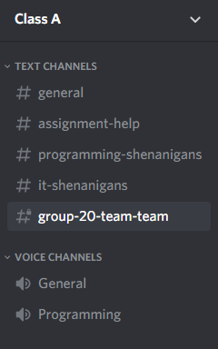
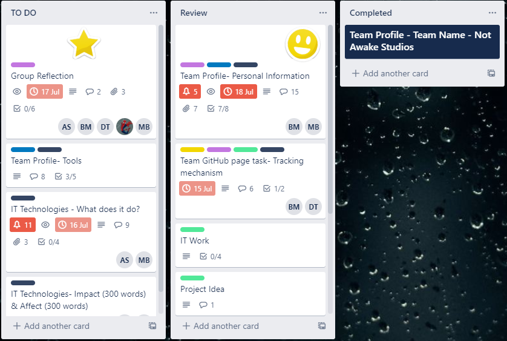
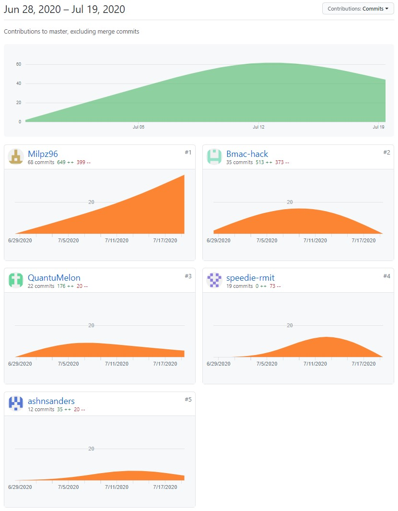
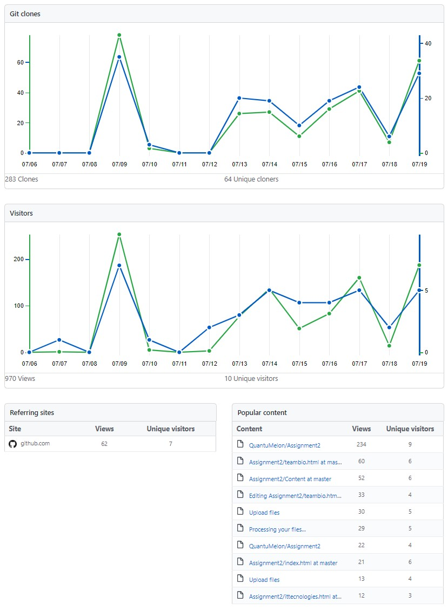

Work tracker
Ash
Bio proof read and edit
wrote up bio/psych/ideal job/feed back for Misty 700+ words
Edited and proof read parts of webpage
Researched Cyber Security and Robots
Wrote up Cyber Security and Robots 2400+ words
Wrote up My FeedBack 200+ words
Uploaded files to Trello and Github
Helped Proof Read submissions
Voted on Team name and Project Idea to be used
Active on Discord , Trello , Github
General Feed Back to group members on submissions
Updated Html on website
Generaly helped group in anyway possible
Misty
Slept
Ate
Slept
Played for a bit
Supervised
Slept some more
Went for a Run around the room
Declan
Created GitHub repo
Invited group members to collaborate on Assignment repo
Created Discord channel for Group communication
Created shared Google Drive folder
Created document with links to each group members GitHub sites
Extracted “Ideal Job” and “Psych Profile” data from group members websites
Various spelling and grammar checks on group’s work
Various document reviews
Provided feedback for work when requested
Helped address link issues for HTML code
Created skeleton HTML sites for Feedback, Group Reflection Industry Data, IT Technologies, IT Work, and Tools
Actively participated in Trello/Discord/GitHub
Finalised content for ‘Profiles - Ideal Jobs’
Finalised content for ‘Profiles - Psych Profiles’
Collected data and neatly presented it for “Industry Data” section
Finalised content for ‘Industry Data’
General group organisation to meet deadlines w/ Brad
Compiling of groups content for final submission of ‘Report’ document
Spelling, grammar, and formatting for ‘Report’ document
Coded Interview video onto Website
Miller
Created website and CSS files
Write up on blockchain 1200 words
Added what was needed into the html files for website
Helped with feedback within the group
Voted on the project idea for the group
Write up on group feedback
Talking everyday on discord with the team
Uploaded and updated Github html and CSS files with relevant information need
Speedie
Created Tello board
Populated trello board with tasks
Completed IT Work interview
Completed Team Project
Cleaned up GitHub repository
Assisted group with general activities and help
Brad
Facilitated creation of INDEX.HTML
Extracted Bio/About me pages from team GitHub pages
Processed/formatted GitHub pages (BIO)
Truncated GitHub profiles (BIO)
Utilised personal Grammarly account to clean up grammar/language of most documents for write-up’s (Quite a time-consuming process)
Uploaded source data to the web site in the form of HTML Code
Posted feedback on project feedback and voted for which one is being done
BIO information now live
Processing Ash’s IT Security write up in Grammarly (approx. 150 positive aspects to update) – this will take time to process – completed this
Performed test for team profile to make bio/about-us page available earlier at start of the project
Created readme.MD for GitHub
Very actively participated in Trello
Created work tracker on GitHub for participants to upload
Agreed to take on IT Tech – Cloud services, computing. Wrote 1200+ words to upload to web page – performed initial concept within 2 hour study period and worked on over course of 1-2 weeks. Updated version on GitHub awaiting upload.
Uploaded further files to the site for processing.
Wrote up tooling aspect
Generally helped with other menial tasks of the project as required on ad-hoc basis
Wrote Team Feedback 200+ words
Overall I believe that the Audit Trail does reflect work quite well for the web-site aspect however it doesn’t accurately reflect the extra-curricular work required for the presentation aspect. Specifically - proofreading / Grammarly. It is all too easy to commit to the same file 100 times on GitHub and claim “You did the most work” when that isn’t necessarily the case. Nobody is doing that in our group, because in fact - the entire team really put in their share of work as highlighted above breaking these aspects down as seen above.
GITHUB PAGE
https://github.com/QuantuMelon/Assignment2
https://quantumelon.github.io/Assignment2/index.html
TOOLING USED
DISCORD
TRELLO
GITHUB
 
During this assignment, it was deemed that Discord would be utilised for team communications holding our meetings/briefings. Twitch was temporarily used a couple of times in order to present when there were issues using Discord - however Discord is free, team-oriented and easy to share files across with. It has built-in voice channels and chats as per the screenshot. We were able to leverage the use of headsets, text and have some fun with meme’s to facilitate productivity on the fly.
Trello - this was the work distribution system to assign work across the team once it had been discussed and With Trello is works based on “Cards” where a task can be created with checkboxes (To-do lists) - and assign to specific people. It also allows for comments to be done to alert people mainly in the notifications section on the right-hand side. It keeps everyone updated with changes as well. Screenshot below
Github - was an easy way to upload HTML Code to get CSS and a web site going in a very short space of time with the goal of presenting out data on a live site highlighting an IT project. The main benefit of this tool is multiple contributors were able to upload changes to code/data and effectively make use of sharing contributions around where the project required this. Much better than using other methods of tooling (sharing files around with email for example) as changes happen on the fly, and the web site updates immediately with a copy available for use within minutes (once DNS / servers update etc)